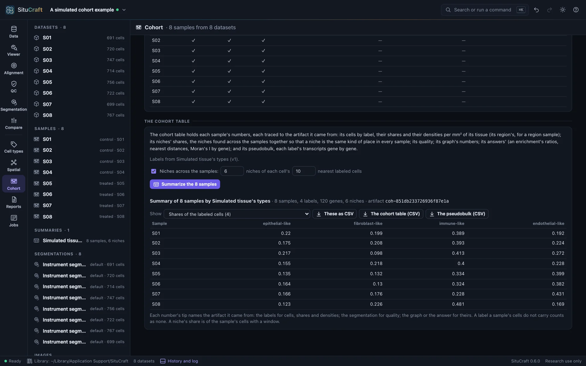
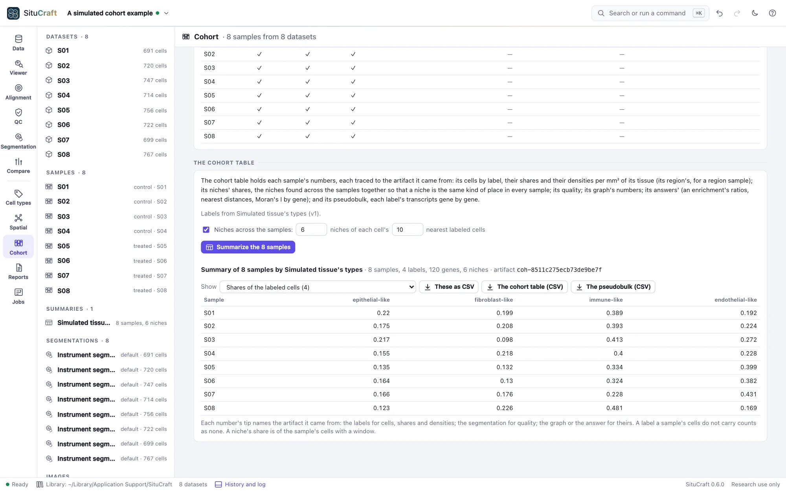

Sample summaries
Before groups of samples can be compared, every sample has to be measured the same way. SituCraft runs the same steps on each, then writes the cohort table, a row for each number of each sample, with the artifact it came from.
The same steps on every sample
The Cohort view's The same steps on every sample runs each step on every sample, with the same parameters:
- Clustering and labels. Each dataset's cells are clustered with SituCraft's defaults (on its default segmentation) and labeled from one marker set or one reference. Every sample's labels then have the same names, and a sample with no cells of one type counts that type as none instead of leaving it out. Labels from chooses the set: one of the project's, SituCraft's starter set that fits the first sample's panel (then used for the rest), or a labeled single-cell reference on this computer, every sample labeled from it.
- A graph of each sample's cells. A region sample's graph is of its region's cells. Cells a review excluded are left out. See Spatial analysis.
- The same questions of each: neighborhood enrichment over the graph, nearest distances, and spatially variable genes (Moran's I), with their defaults.
A step made already is answered at once. Running the steps again after adding a sample makes only that sample's. The table below the button shows what each sample has: its labels, its graph and its answers.
The cohort table
Summarize the samples writes the cohort table, an artifact of its own. For each sample it holds:
- Cells by label: each label's cells, their share of the sample's labeled cells, and their density per mm² of its tissue. The tissue is the area within the tissue's outline, and a region sample's is the tissue within its region.
- Niches' shares: the share of its cells in each niche. The niches are found across the samples together (below).
- Quality: its cells, cells per mm², median transcripts, genes and cell and nucleus areas, the share of cells with a nucleus or without a transcript, and transcripts per 100 µm².
- Its graph's numbers: mean neighbors, median edge length, pieces, and the share of cells without a neighbor.
- Its answers' numbers: each pair of labels' enrichment ratio (neighbors found over expected), each label's median nearest distance to each, and each gene's Moran's I.
- Its pseudobulk: each label's cells' transcripts summed gene by gene, the counts a comparison between groups of samples starts from (Crowell et al. 2020). Where samples have different panels, a gene one panel lacks is left empty, never zero.
Each number is traced to the artifact it came from: a count, share or density to the sample's labels, a quality number to its segmentation, and a graph's or answer's number to that graph or answer. The view shows one family of numbers at a time, with a sample per row; each cell's tip names its source.


Niches across the samples
Niches found in each sample alone are numbered by each sample's own k-means: niche 3 of one sample need not be niche 3 of another. To make a niche the same kind of place in every sample, SituCraft finds them across the samples together. Each cell's window is its nearest labeled cells in its own sample. The windows of every sample are pooled, and one k-means groups them all. See Niches and genes for the windows and k-means. A niche's share in a sample is then comparable between samples.
The view lists each niche's cells across the samples and the labels that define it: those whose share of its windows is at least 1.5 times their share of all the samples' labeled cells. Found for one sample alone, the niches are exactly those the Spatial view finds with the same parameters.
The files
The cohort table (CSV) writes every number, a row each: the sample, its name, the family, what the number is of, its value, and the artifact it came from. The pseudobulk (CSV) writes a row for each sample's label, with its cells and a column for each gene. These as CSV writes the family shown as a wide table, a row a sample and a column each number. The summary's files are described in FORMATS.md.
By remote control, cohort_steps runs the steps, summarize_samples makes the summary (of every sample, or those named), cohort_table reads one family of its numbers, and export writes the table or the pseudobulk. See Remote control.
How it is checked
The validation suite summarizes the simulated cohort and checks:
- Every number equals the artifact's it came from: each label's cells its labels', each ratio, distance and Moran's I its answer's, each graph number the graph's.
- Each sample's shares come within 0.03 of its true types' shares, and its tissue within 2% of the simulated section's area.
- The pseudobulk's level of the gene the simulation raised in one type comes within 0.15 (natural log) of the truth's.
- The niches found together agree with each sample's own, and for one sample alone are exactly its own.